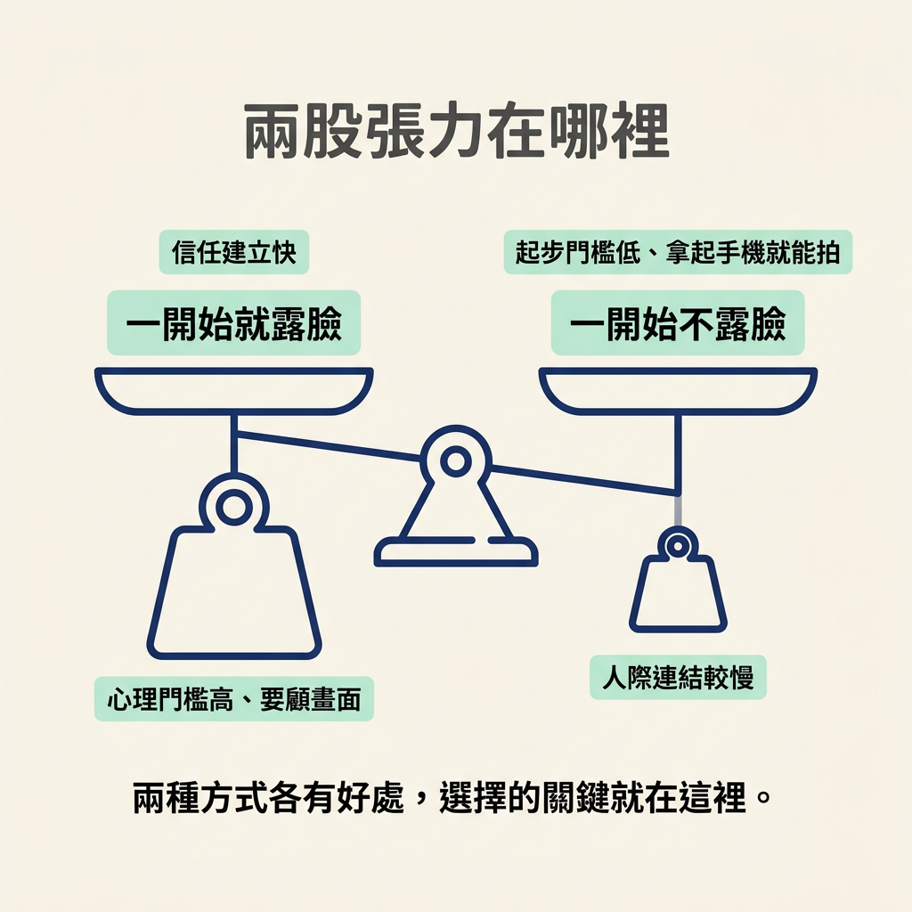
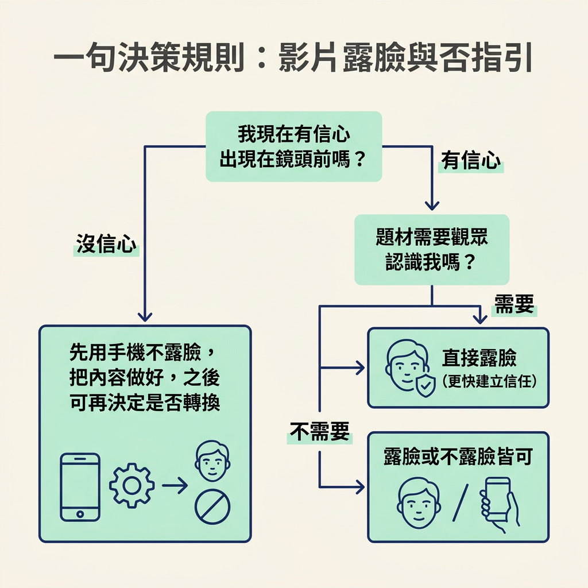

決定第一步要不要露臉，以及之後如何從不露臉轉成露臉。
前面幾節已經談過品質的門檻，以及什麼才算有品質。現在，到了真的要拿起手機、準備錄第一支影片的時候：你要不要出現在鏡頭前？
這是內容流程中、開始錄製前要做的選擇。你要考慮的是自己的信心、題材需不需要觀眾認識你，以及你想怎麼開始；做完決定，就能選擇先露臉或不露臉，也知道之後要不要轉換。有人不是不知道要發內容，而是一想到要出現在鏡頭前就卡住，所以這一節會把兩種做法攤開比較。
露臉能更快建立信任，也就是讓觀眾認識你、相信你。看到真人，觀眾通常更容易和你產生連結。不過，露臉也有較高的心理門檻：你得願意被看見、接受評論，還可能煩惱自己上鏡好不好看，也要多花心思顧畫面。
不露臉的起步門檻較低，拿起手機就能開始，也可以用螢幕或素材呈現內容；相對地，少了直接的人際連結。兩種方式都有它的好處。

| 一開始就露臉 | 一開始不露臉 | |
|---|---|---|
| 信任建立 | 較快，觀眾能直接認識你 | 較慢，主要靠內容本身累積 |
| 心理門檻 | 較高，要克服被看見的焦慮 | 較低，拿起手機就能拍 |
| 器材與畫面 | 要多花心思照顧畫面 | 可用螢幕、素材或聲音呈現 |
| 之後轉換 | 不需要轉換 | 可以等事業擴張時再轉 |
| 適合誰 | 已有信心，或題材需要個人信任 | 還沒準備好露臉，或題材偏工具操作 |
先記住最重要的一點：一開始不想露臉，完全可以。講師就是這樣起步的。他早期不太想露臉，手上也沒有高級器材或好相機，只有一支舊手機；他仍然開始分享自己認為有用的 AI 主題。
面對鏡頭說話本身是一項獨立技能。不露臉，不代表你學不會做內容。你可以先替品牌或事業開始創作，把露臉當成之後再練的技能，不必把兩件事綁在一起。
「不露臉也沒差」不是每種情況都適用。如果你的收入很依賴觀眾對你的個人信任，例如顧問服務、陪跑或一對一教學，觀眾可能需要先認識你，才願意付費。這時長期完全不露臉，可能會讓建立信任更費力，因為你少了最直接的方式。
反過來說，如果內容偏工具或知識傳遞，觀眾更在乎資訊有沒有幫助，那麼露不露臉對結果的影響就比較小。可以先問自己：我的題材和服務，需要觀眾認識我多少？
還有一個重要的例外：如果你一開始就有信心露臉，講師會更推薦直接露臉，因為它能更快建立信任。所以這不是「不露臉比較好」，而是「不露臉也可以開始」。有信心，就走更快建立信任的路；還沒信心，就先選一種能讓自己動起來的方式。
有信心，而且題材需要個人信任，就直接露臉；還沒信心，就先用手邊的手機不露臉，把內容做好。若不確定要不要一直不露臉，就先開始，等有觀眾或事業擴張時再決定要不要轉換。

一開始不露臉完全沒問題，講師也是這樣起步的；如果已經有信心，露臉更能加快信任建立。判斷時，先看自己的信心，以及題材需不需要觀眾認識你。不露臉不是次等選擇，而是一種可以開始、也可以之後轉換的方式。
到這裡，品質的門檻、品質的定義，以及要不要露臉都已經想清楚。最後一步不再停留在觀念：今天就錄一支影片，並把它發出去。